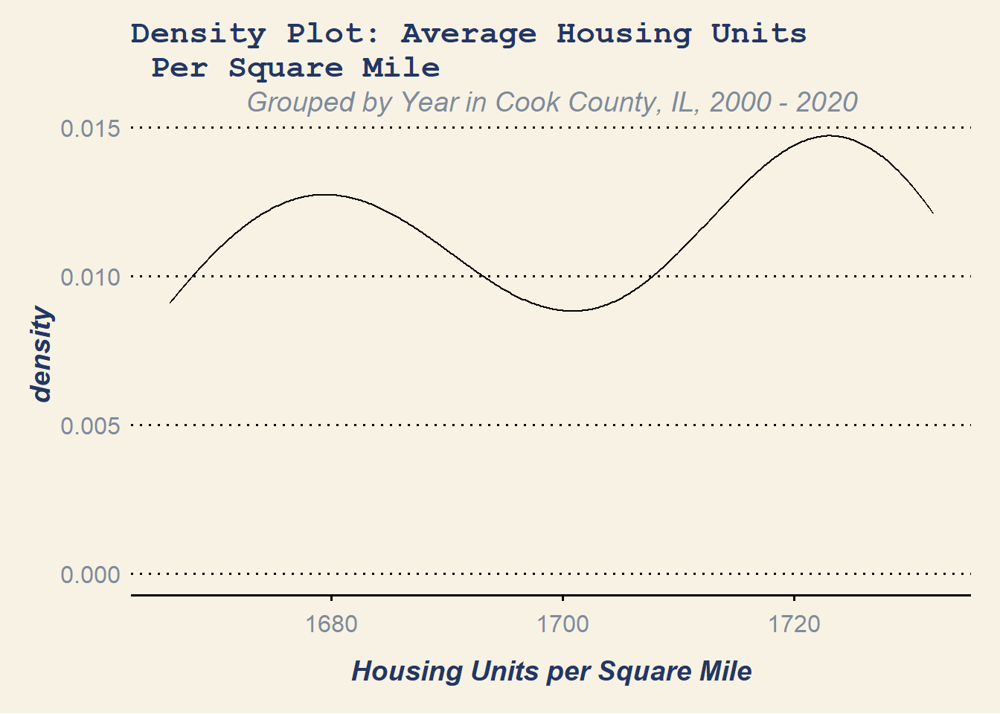
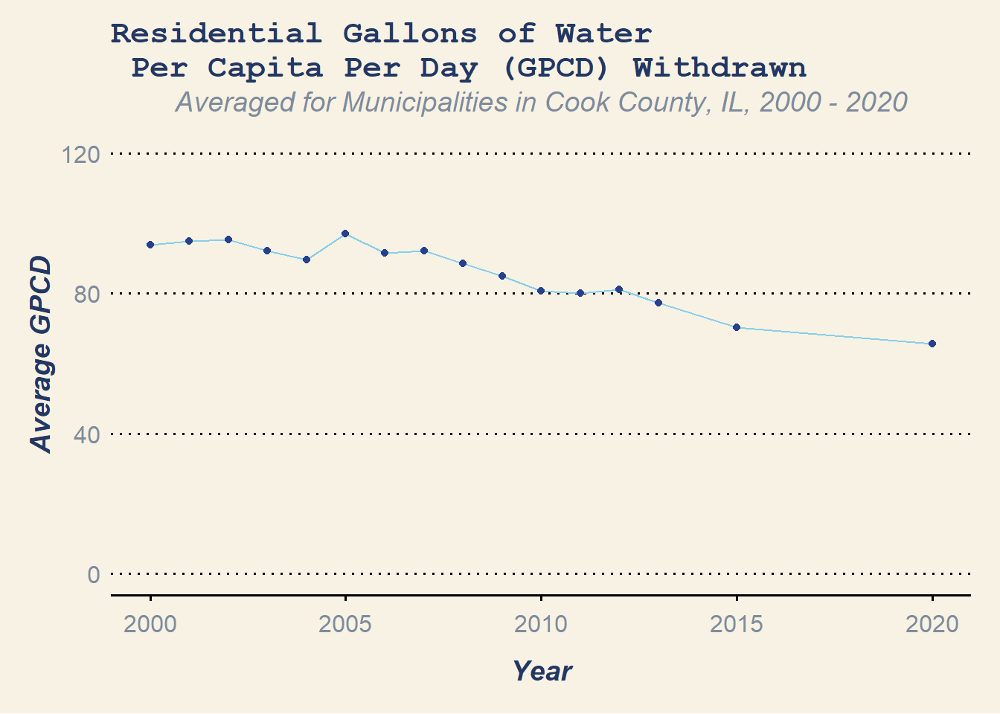
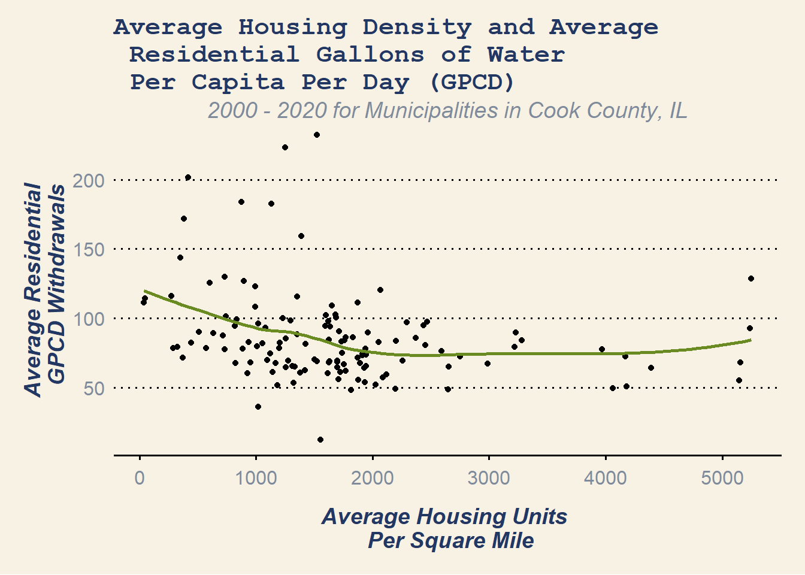

library(tidyverse)
library(gt)
library(gtExtras)
library(paletteer)
library(ggthemes)
setwd(".")Anticipating Climate Migration
Housing Density, Water Resources, and Water Hazards in Cook County, Illinois
I completed this data analysis project using R for a course in fall of 2023. My project partner aggregated the flood susceptibility index scores to the municipal level in GIS, but the writing and data analysis included here is my own.
Project Context
Ongoing speculation posits that Cook County may become a destination for climate migration in the coming years, as people experience displacing climatic events associated with climate change, such as extreme heat, severe weather, or flooding (Cotto 2022). Lake Michigan, which borders the region to the east, poses both a resource and a hazard. Part of the reason that the region might be appealing to those displaced by climate change is because of the ready supply of drinking water from the lake. At the same time, concerns exist over flooding associated with lake-level rise (Egan 2021).
Though the prospect of climate immigration to Cook County is currently conjecture, municipalities in the jurisdiction must begin preparing for this likely trend. University of Chicago Environmental and Urban Studies professor Sabrina Shaikh states that “how Midwestern cities prepare for this will have a big impact on what happens, and the burden of these impacts will be greatly disproportionate unless we plan for it and pay attention to the conditions that have led to urban, environmental and health injustices” (Shaikh quoted in Cotto 2022).
To plan for this context, cities must consider both the allocation of water resources and the management of water hazards in the region. Our investigation hopes to provide a basis for this consideration. By analyzing the relationships between average flood risk and housing density and between daily residential water usage per capita and housing density, we can begin to understand how the housing landscape impacts these concerns.
We expect these variables to be correlated because of existing literature on the matter. Sampson et al (2022) found that increasing density may result in “uneven, nonlinear efficiency gains in water use.” However, increasing housing density may have “adverse effects” on flood risk, though other land use patterns associated with high density (such as impervious surfaces) could also help explain the relationship (Son et al 2023).
The findings of this report could inform zoning policy moving forward. Suburban Cook County is associated with a higher frequency of single family detached housing (ie, lower density), whereas the City of Chicago and inner-ring suburbs are characterized by higher density housing types, such as multi-family housing or townhouses. Zoning is the underlying law dictating what types of housing are allowed to be built where, and many suburban municipalities are restrictive of where multi-family housing can be placed.
Both relationships may vary depending upon the local context in which they are investigated. We hope to contribute to the literature investigating the relationship between housing density and water resources and hazards as well as identify target municipalities for water conservation projects, flood mitigation efforts, and denser housing developments. Such policies will help the region prepare to receive climate migrants while simultaneously addressing its own concerns due to climate change.
Research Questions
What relationship, if any, exists between housing density and water usage by municipality in Cook County? What relationship, if any, exists between housing density and flood susceptibility?
Data Wrangling
To begin our investigation, we must ensure that our datasets adhere to the principles of tidy data (Wickham and Golemund 2017):
Each variable must have its own column.
Each observation must have its own row.
Each value must have its own cell.
Our data comes from the Chicago Metropolitan Agency for Planning (CMAP) and the US Census Bureau. From CMAP, we are using the Regional Flood Susceptibility Index, which indicates priority areas for flood mitigation interventions, and the ON TO 2050 Regional Water Demand Forecast, which includes housing units per square mile for the CMAP region and estimated (2000-2013) and projected (2015-2020) unit use (gallons per capita per day or GPCD) from the residential public water supply sector. From the US Census Bureau, we used table H1 from the Decennial Census to supplement projected values from CMAP’s Regional Water Demand Forecast.
Load libraries & Set Working Directory
Bring data into R
housing <- read_csv("housing_density.csv")
wateruse <- read_csv("residential_water.csv")
cook_munis <- read_csv("Cook_County_Municipalities.csv")
housingdensity_2020 <- read_csv("housingdensity2020.csv")
fsi_score <- read_csv("CMAP_FSI.csv")Tidy Data
Housing Density Data (units per square mile)
In this dataset, values after 2013 are projections. Projections were revised in 2019 based on emerging data. We will also add actual housing density values for 2020 from the US Census. We do not want to include projections in our analysis unless absolutely necessary, so we will filter out years greater than 2020.
Documentation from CMAP indicates that the towns of Inverness, South Barrington, Barrington Hills, Orland Hills, and Deer Park were omitted from the dataset because they either did not have a municipal-scale community water supply system or had other complications with the service area that required exclusion from the data. Justice and Willow Springs were combined in the CMAP dataset.
We too will exclude Inverness, South Barrington, Barrington Hills, Orland Hills, and Deer Park from our analysis as well because their water supply system differs so significantly from the rest of the dataset. Before joining the CMAP dataset to the list of municipalities in Cook County, we will change the name of “Justice” to match the “Justice-Willow Springs” entry in the CMAP dataset. We will have to do the same for the updated housing density table and will average the 2020 housing densities of the two towns.
cook_munis <- cook_munis %>%
mutate(Municipality = ifelse(Municipality == "Justice",
"Justice-Willow Springs",
Municipality))
housingdensity2020<- housingdensity_2020 %>%
mutate(NAME = ifelse(NAME == "Justice",
"Justice-Willow Springs",
NAME)) %>%
mutate(NAME = ifelse(NAME == "Willow Springs",
"Justice-Willow Springs",
NAME)) %>%
group_by(NAME) %>%
mutate(housing_density = mean(housing_density)) %>%
distinct(NAME, .keep_all = TRUE)
housingdensity2020 %>%
filter (NAME == "Justice-Willow Springs") # 1 row - ready to proceedAt this point, we will rename the housing_density column to “2020” to match the column formatting for the housing and wateruse tibbles. For the housing tibble, we will select columns of interest, rename any confusing column titles, and join the updated 2020 housing density dataset to the existing housing tibble.
housingdensity2020 <- housingdensity2020 %>%
rename("2020" = housing_density)
housing1 <-
housing %>%
select(1:16) %>%
rename("Municipality" = "...1") %>% # clean names (important for tidy data and for joining)
inner_join(housingdensity2020,
join_by("Municipality" == "NAME"))
housing1 %>%
filter(if_any(everything(), ~is.na(.)))We have no missing values because of our decision to exclude municipalities that CMAP also excluded due to the communities’ distinct nature from the rest of Cook County. This is a limitation of our research.
We will use the “pivot_longer” function to create a new column, year, because year is also a variable in our dataset, so it requires its own column.
housing1 <- housing1 %>%
pivot_longer(c("2000":"2015", "2020"), # use pivot longer to make "year" a variable
values_to = "units_per_sqmile",
names_to = "year")
cook_housing <- left_join(cook_munis, housing1,
join_by(Municipality == Municipality)) # join to get only municipalities in Cook County (CMAP region encompasses 7 counties)
cook_housing <-
cook_housing %>%
select(c(Municipality, year, units_per_sqmile))
cook_housing %>%
filter(if_any(everything(), ~is.na(.))) # 6 NAs - but it's okay6 NAs remain. However, the only missing values are the ones we have already determined must be omitted, or have already been aggregated with another municipality, so at this point, we are comfortable removing all NAs.
cook_housing <- cook_housing %>%
filter(!if_any(everything(), ~is.na(.)))Note that for each city, an entry exists for years 2000-2013, 2015, and 2020. Here is a preview of the data table just for the City of Chicago (the full table with all Cook County municipalities contains 2048 observations):
| Housing Density | ||
|---|---|---|
| 2000 - projected 2020, Chicago, IL | ||
| Municipality | Year | Housing units per square mile |
| Chicago | 2000 | 5068 |
| Chicago | 2001 | 5113 |
| Chicago | 2002 | 5158 |
| Chicago | 2003 | 5203 |
| Chicago | 2004 | 5248 |
| Chicago | 2005 | 5293 |
| Chicago | 2006 | 5338 |
| Chicago | 2007 | 5384 |
| Chicago | 2008 | 5265 |
| Chicago | 2009 | 5268 |
| Chicago | 2010 | 5247 |
| Chicago | 2011 | 5240 |
| Chicago | 2012 | 5231 |
| Chicago | 2013 | 5238 |
| Chicago | 2015 | 5333 |
| Chicago | 2020 | 5383 |
| Source: Chicago Metropolitan Agency for Planning (CMAP), ON TO 2050 Regional Water Demand Forecast | ||
Water Withdrawal - Gallons per capita per day (GPCD)
In this dataset, values after 2013 are projections. Projections were revised in 2019 based on emerging data. We do not want to include too many projections in our analysis, so we will filter out years greater than 2020. There is no updated data that will supplement this data, unfortunately.
We can proceed with using pivot_longer as we did with the housing tibble so that year has its own column and renaming confusing column titles. We can join the water usage dataset to the table of Cook County municipalities to keep only observations within Cook County.
To tidy the data further, we will select only columns of interest to us. We then check for NAs.
water1 <-
wateruse %>%
pivot_longer(c("2000":"2050"), # use pivot longer to ensure that "year" becomes
values_to = "gpcd", # a variable
names_to = "year") %>%
rename("Municipality" = "...1")
cook_water <- left_join(cook_munis, water1) # join to cook_munis to keep only municipalities in Cook County
cook_water <-
cook_water %>%
select(c(Municipality, year, gpcd)) %>%# select only columns we are interested in working with
filter(year <= "2020")
cook_water %>%
filter(if_any(everything(), ~is.na(.))) # 0 NAsNote that for each city, an entry exists for years 2000-2013, 2015, and 2020. Here is a preview of the data table just for the City of Oak Park (the actual table has 2,048 observations):
cook_water %>%
filter(Municipality == "Oak Park") %>%
gt() %>%
cols_label(
Municipality = "Municipality",
year = "Year",
gpcd = html("Gallons Withdrawn <br> Per Capita Per Day")
) %>%
tab_source_note(source_note = md("*Source: Chicago Metropolitan Agency for Planning (CMAP), ON TO 2050 Regional Water Demand Forecast*")) %>%
tab_source_note(source_note = md("*Note: Values after 2013 are projections*")) %>%
tab_options(column_labels.background.color = "skyblue") %>%
tab_header(title = html("<b> Residential Water Withdrawal <b>"),
subtitle = html("<i> 2000-2020, Oak Park, IL <i> "))%>%
opt_align_table_header(align = "left")| Residential Water Withdrawal | ||
|---|---|---|
| 2000-2020, Oak Park, IL | ||
| Municipality | Year | Gallons Withdrawn Per Capita Per Day |
| Oak Park | 2000 | 71 |
| Oak Park | 2001 | 79 |
| Oak Park | 2002 | 80 |
| Oak Park | 2003 | 76 |
| Oak Park | 2004 | 77 |
| Oak Park | 2005 | 78 |
| Oak Park | 2006 | 76 |
| Oak Park | 2007 | 67 |
| Oak Park | 2008 | 67 |
| Oak Park | 2009 | 64 |
| Oak Park | 2010 | 62 |
| Oak Park | 2011 | 60 |
| Oak Park | 2012 | 66 |
| Oak Park | 2013 | 60 |
| Oak Park | 2015 | 55 |
| Oak Park | 2020 | 51 |
| Source: Chicago Metropolitan Agency for Planning (CMAP), ON TO 2050 Regional Water Demand Forecast | ||
| Note: Values after 2013 are projections | ||
Flood Susceptibility Index (FSI)
The Flood Susceptibility Index (FSI) is used to “identify priority areas across the region for flood mitigation activities” according the documentation on CMAP’s website. The data has been aggregated to average FSI score at the municipal level. We will remove unwanted columns from the table.
fsi_score <- fsi_score %>%
select(-OID_, -agency, -comments, -sdelength_, -st_area_sh, -Shape_Length,
-Shape_Area, -ZONE_CODE, -COUNT, -AREA, -PercentBlack, -agency_des_1,
-OBJECTID) The nature of the data has included unincorporated areas in Cook County. We will filter out these areas, as we are only interested in incorporated municipalities with control over their own zoning codes.
str_view(fsi_score$agency_des, "TWP")
fsi_score <- fsi_score %>%
filter(!str_detect(agency_des, "TWP")) %>%
arrange(municipali) %>%
rename(Municipality = municipali,
FSI = MEAN)From a glance, we can see that there are duplicates in the data. This is sometimes typical with GIS data brought into R – for whatever reason, shapefiles may have duplicate entries for the same place if geometries are non-contiguous (ie - if a municipality is on the border of Cook County, it might get cut up into pieces when removing the portions not in Cook County). Now, we will look at duplicates to assess how to deal with them.
fsi_score %>%
group_by(Municipality) %>%
filter(n() > 1) %>%
ungroup()The aggregated FSI is identical among any duplicate instances, so at this point, we can remove duplicates.
fsi_score <- fsi_score %>%
distinct()Now, we can check for missing values in the data.
fsi_score %>%
filter(if_any(everything(), ~is.na(.))) # there are 0All datasets seem tidy at this point, because each variable has its own column, each row is an observation, and each value has its own cell.
The unit of observation for cook_water and cook_housing is municipality in Cook County by year. Each observation now has its own row. The unit of observation for the flood susceptibility index is municipality in Cook County. The FSI was devised in 2018 but is meant to be a long-term guide for flood mitigation efforts that indicates long ranging trends in the area, not a point-in-time dataset.
At this point, we can join the data that have matching units of observation. We will also ensure that the “year” column is being treated as a number.
cook_water_housingdensity <- full_join(cook_housing, cook_water,
join_by(year == year,
Municipality == Municipality))
cook_water_housingdensity <-
cook_water_housingdensity %>%
mutate(year = as.numeric(year))We will also join housing density in the county for 2020 to the flood susceptibility index to investigate current conditions regarding flood risk and housing density.
housing_FSI_2020 <-
housingdensity_2020 %>%
select(c(NAME, housing_density)) %>%
rename(Municipality = NAME,
units_per_sqmile = housing_density) %>%
inner_join(fsi_score,
join_by(Municipality == Municipality)) %>%
select(-c(agency_des)) %>%
mutate(FSI = round(FSI, 2)) %>%
mutate(year = 2020)We have also checked for missing values and determined how to address them. We may now explore the data before moving onto visualizing the results.
Here is a “snapshot” of the residential water usage and housing density dataset, arranged in descending order regardless of year by residential daily water usage, noting that values for average gallons of water withdrawn per capita per day are projections after 2013:
cook_water_housingdensity %>%
arrange(desc(gpcd)) %>%
slice(1:15) %>%
gt() %>%
cols_label(
Municipality = "Municipality",
gpcd = html("Average Gallons of Water Withdrawn <br> Per Capita Per Day (GPCD)"),
units_per_sqmile = html("Average Housing Units <br> Per Square Mile"),
year = "Year"
) %>%
tab_source_note(source_note = html("<i>Source: Chicago Metropolitan Agency for Planning (CMAP), ON TO 2050 Regional Water Demand Forecast <br> US Census Bureau, 2020 Decennial Census, table H1<i>")) %>%
tab_source_note(source_note = md("*Note: GPCD values after 2013 are projected*")) %>%
tab_options(column_labels.background.color = "skyblue") %>%
tab_header(title = html("<b> Housing Density & Residential Water Withdrawal <b>"),
subtitle = html("<i> Average from 2000 - projected 2020, Cook County, IL <i> ")) %>%
opt_align_table_header(align = "left")| Housing Density & Residential Water Withdrawal | |||
|---|---|---|---|
| Average from 2000 - projected 2020, Cook County, IL | |||
| Municipality | Year | Average Housing Units Per Square Mile |
Average Gallons of Water Withdrawn Per Capita Per Day (GPCD) |
| Robbins | 2000 | 1457 | 314 |
| Robbins | 2001 | 1480 | 307 |
| Golf | 2005 | 341 | 304 |
| Robbins | 2009 | 1646 | 276 |
| Glenview | 2007 | 1281 | 267 |
| Robbins | 2002 | 1503 | 266 |
| Glenview | 2005 | 1251 | 263 |
| Robbins | 2006 | 1596 | 259 |
| Glenview | 2002 | 1205 | 259 |
| Glenview | 2000 | 1174 | 255 |
| Glenview | 2003 | 1221 | 254 |
| Robbins | 2005 | 1573 | 253 |
| Glenview | 2004 | 1236 | 253 |
| Robbins | 2003 | 1526 | 250 |
| Robbins | 2010 | 1413 | 248 |
|
Source: Chicago Metropolitan Agency for Planning (CMAP), ON TO 2050 Regional Water Demand Forecast US Census Bureau, 2020 Decennial Census, table H1 |
|||
| Note: GPCD values after 2013 are projected | |||
Robbins and Glenview consistently use the highest amount of water per capita per day.
Here is a table visualizing part of the housing density and FSI dataset (municiaplities with the highest 10 average FSIs are at the top):
housing_FSI_2020 %>%
arrange(desc(FSI)) %>%
slice(1:10) %>%
select(-c(year)) %>%
gt() %>%
cols_label(
Municipality = "Municipality",
FSI = html("Flood Susceptibility Index"),
units_per_sqmile = html("Average Housing Units <br> Per Square Mile")
) %>%
tab_source_note(source_note = html("<i>Source: Chicago Metropolitan Agency for Planning (CMAP), Flood Susceptibility Index <br> US Census Bureau, 2020 Decennial Census, table H1<i>")) %>%
tab_options(column_labels.background.color = "skyblue") %>%
tab_header(title = html("<b> Housing Density & Aggregated Flood Susceptibility Index Score by Municipality <b>"),
subtitle = html("<i> Cook County, IL, 2020 <i> ")) %>%
opt_align_table_header(align = "left")| Housing Density & Aggregated Flood Susceptibility Index Score by Municipality | ||
|---|---|---|
| Cook County, IL, 2020 | ||
| Municipality | Average Housing Units Per Square Mile |
Flood Susceptibility Index |
| Hometown | 4061 | 9.96 |
| Berwyn | 5388 | 9.94 |
| Calumet Park | 2666 | 9.91 |
| Phoenix | 1779 | 9.88 |
| Cicero | 4405 | 9.88 |
| Posen | 1642 | 9.83 |
| Elmwood Park | 5276 | 9.68 |
| Maywood | 3107 | 9.59 |
| Blue Island | 2198 | 9.57 |
| Dolton | 1870 | 9.54 |
|
Source: Chicago Metropolitan Agency for Planning (CMAP), Flood Susceptibility Index US Census Bureau, 2020 Decennial Census, table H1 |
||
dim(cook_water_housingdensity) # 2048 x 4
dim(housing_FSI_2020) # 134 x 4
cook_water_housingdensity %>%
group_by(Municipality) %>%
distinct() # 128 grouped municipalitiesThe FSI dataset contains all municipalities in Cook County, while some had to be omitted from the water usage and housing density dataset (as discussed above). This accounts for the discrepancies in dimensions.
Creating a theme
We will create a theme to standardize our visualizations.
theme_hm <- function(){
font <- "sans" #assign font family up front
theme_wsj() %+replace% #replace elements we want to change
theme(
plot.title = element_text( #title
family = "mono", #set font family
size = 16, #set font size
face = 'bold', #bold typeface
color = "#233763",
hjust = 0, #left align
vjust = 2), #raise slightly
plot.subtitle = element_text( #subtitle
family = font, #font family
size = 14, #font size
color = "#7F8B9B", # font color
face = "italic"),
plot.caption = element_text( #caption
family = font, #font family
size = 12, #font size
color = "#233763",
hjust = 1), #right align
axis.title = element_text( #axis titles
family = font, #font family
size = 14,
color = "#233763",
face = "bold.italic"), #font size
axis.text = element_text( #axis text
family = font, #axis family
color = "#7F8B9B",
size = 12), #font size
axis.text.x = element_text( #margin for axis text
margin=margin(5, b = 10))
)
}Exploring the Data
Density and Water
cook_water_housingdensity %>%
summarise(across(c(gpcd, units_per_sqmile), mean))
# mean for residential usage across the entire data set is 85.92 GPCD
# mean for housing density is 1702 units per square mile
cook_water_housingdensity %>%
summarise(across(c(gpcd, units_per_sqmile), median))
# median for residential water usage across entire dataset is 77 GPCD
# median for housing density is 1602 units per square mile
cook_water_housingdensity %>%
summarise(across(c(gpcd, units_per_sqmile), min))
# minimum for residential water usage is 0 - this is concerning
# minimum housing density is 35 units per square mile
view(cook_water_housingdensity %>%
filter(gpcd == min(gpcd) |
gpcd == max(gpcd) |
units_per_sqmile == min(units_per_sqmile)|
units_per_sqmile == max(units_per_sqmile)))
cook_water_housingdensity %>%
summarise(across(c(gpcd, units_per_sqmile), max))
# 314 GPCD is the maximum daily water usage
# 5522 housing units per mile is the maximum density
cook_water_housingdensity %>%
summarise(across(c(gpcd, units_per_sqmile), IQR))
# IQR for GPCD - 33
# IQR for units_per_sqmile - 930.5
cook_water_housingdensity %>%
summarise(across(c(gpcd, units_per_sqmile), sd))
# SD for water usage - 36.45
# SD for housing density - 1045Bedford Park has the lowest housing density throughout the 20 year period, occurring in 2011 and 2020. Oak Park has the highest density of the dataset in 2020. Robbins had the highest residential water usage per capita in 2000, and Homer Glen was reportedly the lowest in 2000, but this was before the municipality was incorporated in 2001. Based on the IQR and standard deviation, it seems like this dataset may have a lot of outliers, particularly for the housing density variable.
cook_water_housingdensity %>%
summarize(avgwater = round(mean(gpcd), 2),
avgdensity = round(mean(units_per_sqmile), 0),
medianwater = round(median(gpcd), 2),
mediandensity = round(median(units_per_sqmile), 0),
SDwater = round(sd(gpcd), 2),
SDdensity = round(sd(units_per_sqmile), 2)) %>%
gt() %>%
cols_label(
avgwater = html("Average Gallons of Water Withdrawn <br> Per Capita Per Day (GPCD)"),
avgdensity = html("Average Housing Units <br> Per Square Mile"),
medianwater = "Median Gallons of Water Withdrawn Per Capita Per Day",
mediandensity = html("Median Housing Units <br> Per Square Mile"),
SDwater = html("Standard Deviation <br> Water Usage"),
SDdensity = html("Standard Deviation <br> Housing Density")
) %>%
tab_source_note(source_note = html("<i>Source: Chicago Metropolitan Agency for Planning (CMAP), ON TO 2050 Regional Water Demand Forecast <br> US Census Bureau, 2020 Decennial Census, table H1<i>")) %>%
tab_source_note(source_note = md("*Note: GPCD values after 2013 are projected*")) %>%
tab_options(column_labels.background.color = "skyblue") %>%
tab_header(title = html("<b> Summary Statistics <br> Housing Density & Residential Water Withdrawal<b>"),
subtitle = html("<i> 2000 - 2020, <br> Municipalities in Cook County, IL <i> ")) %>%
opt_align_table_header(align = "left")|
Summary Statistics Housing Density & Residential Water Withdrawal |
|||||
|---|---|---|---|---|---|
|
2000 - 2020, Municipalities in Cook County, IL |
|||||
| Average Gallons of Water Withdrawn Per Capita Per Day (GPCD) |
Average Housing Units Per Square Mile |
Median Gallons of Water Withdrawn Per Capita Per Day | Median Housing Units Per Square Mile |
Standard Deviation Water Usage |
Standard Deviation Housing Density |
| 85.92 | 1702 | 77 | 1602 | 36.45 | 1044.75 |
|
Source: Chicago Metropolitan Agency for Planning (CMAP), ON TO 2050 Regional Water Demand Forecast US Census Bureau, 2020 Decennial Census, table H1 |
|||||
| Note: GPCD values after 2013 are projected | |||||
cook_water_housingdensity %>%
ggplot() +
geom_density(aes(x = gpcd)) +
labs(x = "Residential Daily Water Usage Per Capita (GPCD)",
y = "Density",
title = "Density Plot: Residential Gallons of Water \n Per Capita Per Day (GPCD) Withdrawn",
subtitle = "Cook County, IL, 2000 - 2020") +
theme_hm()Daily residential water usage per capita from 2000 - 2020 is relatively normal, but skewed right.
cook_water_housingdensity %>%
ggplot() +
geom_density(aes(x = units_per_sqmile)) +
labs(x = "Housing Units Per Square Mile",
y = "Density",
title = "Density Plot: Housing Units Per Square Mile",
subtitle = "Cook County, IL, 2000 - 2020") +
theme_hm()This dataset has an irregular distribution. This reflects the diverse forms that municipalities within Cook County take – some are much more dense than others. We will also use box plots to visualize outliers.
cook_water_housingdensity %>%
ggplot() +
geom_boxplot(aes(gpcd)) +
labs(x = "Daily Residential Water Use Per Capita",
title = "Box Plot: Residential Gallons of Water \n Per Capita Per Day (GPCD) Withdrawn",
subtitle = "Cook County, IL, 2000 - 2020") +
theme_hm()Lots of outliers on both the high and low end of the graph for residential daily water use.
cook_water_housingdensity %>%
ggplot() +
geom_boxplot(aes(x = units_per_sqmile)) +
labs(x = "Housing Units Per Square Mile",
title = "Box Plot: Housing Units Per Square Mile",
subtitle = "Cook County, IL, 2000 - 2020") +
theme_hm()Only outliers on the upper end of the spectrum, but there are quite a few.
We are not concerned about the outliers in the data because they are indicative of the wide range of environments in Cook County.
Density and Water Summary Statistics Grouped by Municipality
|
Summary Statistics Housing Density & Residential Water Withdrawal by Municipality |
||||||
|---|---|---|---|---|---|---|
| Average from 2000 - projected 2020, Cook County, IL | ||||||
| Municipality | Average Gallons of Water Withdrawn Per Capita Per Day (GPCD) |
Average Housing Units Per Square Mile |
Median Gallons of Water Withdrawn Per Capita Per Day | Median Housing Units Per Square Mile |
Standard Deviation Water Usage |
Standard Deviation Housing Density |
| Robbins | 232.44 | 1524 | 247.0 | 1540 | 52.52 | 86.27 |
| Glenview | 223.25 | 1251 | 235.0 | 1252 | 38.43 | 43.59 |
| Oak Brook | 201.75 | 417 | 205.0 | 410 | 29.20 | 19.44 |
| Glencoe | 183.75 | 874 | 184.5 | 876 | 18.03 | 13.12 |
| Winnetka | 182.44 | 1130 | 182.5 | 1128 | 14.63 | 16.70 |
| Frankfort | 171.88 | 382 | 172.0 | 386 | 13.95 | 33.87 |
| Kenilworth | 159.38 | 1387 | 157.0 | 1384 | 12.07 | 66.77 |
| Golf | 143.44 | 349 | 131.5 | 346 | 52.03 | 16.22 |
| Northfield | 129.75 | 733 | 133.0 | 730 | 18.48 | 15.27 |
| Chicago | 128.62 | 5251 | 132.0 | 5248 | 13.67 | 87.88 |
| Barrington | 126.75 | 896 | 129.0 | 894 | 16.13 | 30.59 |
| Burr Ridge | 125.44 | 604 | 127.0 | 602 | 15.95 | 17.73 |
| Flossmoor | 122.75 | 992 | 127.5 | 999 | 16.93 | 21.30 |
| Park Ridge | 120.25 | 2067 | 122.5 | 2070 | 14.36 | 48.16 |
| University Park | 115.75 | 275 | 117.5 | 268 | 11.93 | 21.43 |
| Hinsdale | 115.69 | 1352 | 117.0 | 1362 | 11.04 | 56.83 |
| McCook | 114.44 | 49 | 111.0 | 48 | 32.56 | 6.13 |
| Bedford Park | 111.38 | 39 | 116.5 | 38 | 20.74 | 3.04 |
| Wilmette | 111.12 | 1872 | 109.0 | 1866 | 10.78 | 36.84 |
| Harvey | 109.06 | 1653 | 105.5 | 1656 | 26.99 | 119.63 |
| Northbrook | 108.12 | 993 | 108.5 | 986 | 9.08 | 26.19 |
| River Forest | 102.38 | 1684 | 108.0 | 1688 | 15.96 | 29.03 |
| Riverdale | 101.94 | 1602 | 98.5 | 1617 | 21.53 | 96.37 |
| Lemont | 101.38 | 740 | 105.0 | 738 | 16.23 | 20.28 |
| Lincolnwood | 100.56 | 1688 | 104.0 | 1688 | 16.40 | 39.60 |
| Deerfield | 100.00 | 1228 | 102.0 | 1207 | 11.19 | 39.28 |
| Markham | 99.00 | 833 | 98.5 | 792 | 11.35 | 70.67 |
| Palos Heights | 98.44 | 1295 | 101.5 | 1326 | 13.69 | 82.58 |
| Western Springs | 98.00 | 1621 | 95.0 | 1623 | 17.94 | 44.37 |
| La Grange Park | 97.56 | 2468 | 98.5 | 2473 | 13.74 | 91.42 |
| La Grange | 97.00 | 2294 | 110.5 | 2268 | 22.13 | 79.79 |
| Orland Park | 95.88 | 1018 | 99.5 | 1012 | 11.85 | 17.96 |
| Skokie | 94.75 | 2435 | 91.0 | 2432 | 14.31 | 46.67 |
| Burnham | 94.31 | 820 | 94.5 | 819 | 9.75 | 22.07 |
| Crestwood | 94.31 | 1596 | 95.0 | 1567 | 11.19 | 100.72 |
| Schiller Park | 93.94 | 1636 | 94.5 | 1606 | 18.59 | 77.95 |
| Justice-Willow Springs | 93.19 | 1082 | 98.5 | 1076 | 10.58 | 47.11 |
| Elmwood Park | 92.50 | 5240 | 87.0 | 5278 | 21.51 | 103.88 |
| Morton Grove | 90.38 | 1711 | 90.5 | 1706 | 11.32 | 65.25 |
| Palos Park | 89.94 | 509 | 93.0 | 528 | 10.44 | 57.16 |
| Westchester | 89.62 | 1958 | 97.0 | 1946 | 16.68 | 130.30 |
| Norridge | 89.44 | 3227 | 88.0 | 3214 | 16.42 | 80.41 |
| Lynwood | 89.38 | 635 | 90.0 | 616 | 10.20 | 65.71 |
| Tinley Park | 88.12 | 1353 | 90.5 | 1369 | 9.25 | 62.19 |
| Olympia Fields | 87.62 | 715 | 91.0 | 678 | 14.93 | 57.03 |
| Riverside | 86.06 | 1770 | 85.0 | 1770 | 15.58 | 77.97 |
| North Riverside | 86.00 | 1833 | 87.0 | 1835 | 10.32 | 55.59 |
| Evergreen Park | 85.56 | 2369 | 91.0 | 2378 | 14.59 | 35.25 |
| Bensenville | 85.44 | 1254 | 91.0 | 1248 | 18.40 | 41.02 |
| Des Plaines | 84.25 | 1624 | 85.5 | 1606 | 10.76 | 50.67 |
| Forest Park | 84.19 | 3281 | 82.0 | 3307 | 12.59 | 60.69 |
| Buffalo Grove | 84.12 | 1760 | 85.0 | 1751 | 6.57 | 20.53 |
| Calumet City | 83.38 | 2202 | 85.0 | 2202 | 9.20 | 31.94 |
| Oak Forest | 83.31 | 1735 | 85.5 | 1739 | 13.09 | 52.62 |
| Sauk Village | 82.81 | 937 | 85.0 | 910 | 10.60 | 59.58 |
| Palatine | 82.50 | 2050 | 82.5 | 2032 | 10.22 | 31.64 |
| Alsip | 82.44 | 1203 | 82.0 | 1209 | 14.45 | 33.10 |
| Thornton | 82.31 | 446 | 81.0 | 438 | 12.99 | 30.87 |
| South Holland | 81.81 | 1057 | 85.5 | 1068 | 8.92 | 36.72 |
| Richton Park | 81.44 | 1423 | 85.0 | 1433 | 9.83 | 65.70 |
| Brookfield | 80.56 | 2454 | 78.5 | 2446 | 16.15 | 64.76 |
| South Chicago Heights | 79.50 | 1008 | 79.5 | 1026 | 13.33 | 48.22 |
| Hodgkins | 79.38 | 327 | 82.5 | 346 | 11.62 | 41.54 |
| Maywood | 79.25 | 3220 | 81.0 | 3190 | 6.91 | 116.69 |
| Elk Grove Village | 78.44 | 1200 | 75.5 | 1201 | 12.34 | 19.62 |
| Forest View | 78.31 | 287 | 76.5 | 294 | 11.54 | 22.76 |
| Ford Heights | 78.19 | 574 | 81.5 | 598 | 14.06 | 81.85 |
| Bartlett | 78.06 | 885 | 80.0 | 882 | 9.07 | 29.21 |
| Park Forest | 78.06 | 1940 | 82.0 | 1917 | 14.17 | 41.23 |
| Matteson | 77.56 | 733 | 80.0 | 735 | 11.58 | 50.60 |
| Hometown | 77.50 | 3969 | 75.5 | 3992 | 12.54 | 240.65 |
| Chicago Ridge | 76.00 | 2590 | 79.5 | 2594 | 7.47 | 105.94 |
| Wheeling | 75.00 | 1738 | 76.0 | 1738 | 6.15 | 60.81 |
| Hillside | 74.38 | 1123 | 77.0 | 1044 | 8.65 | 149.34 |
| Phoenix | 73.88 | 1914 | 70.0 | 1877 | 19.01 | 132.24 |
| Dolton | 73.69 | 1942 | 80.5 | 1941 | 23.78 | 40.31 |
| Arlington Heights | 73.06 | 1915 | 74.0 | 1910 | 4.78 | 45.33 |
| Evanston | 72.44 | 4167 | 71.5 | 4152 | 6.38 | 127.94 |
| Bellwood | 72.12 | 2749 | 73.0 | 2756 | 5.02 | 70.88 |
| Broadview | 71.44 | 1871 | 69.5 | 1864 | 9.74 | 44.97 |
| Homer Glen | 71.44 | 371 | 74.5 | 364 | 20.41 | 10.93 |
| Homewood | 69.94 | 1501 | 73.0 | 1494 | 9.64 | 20.97 |
| Elgin | 69.88 | 1098 | 70.0 | 1062 | 6.16 | 98.16 |
| Rolling Meadows | 69.38 | 1695 | 72.0 | 1684 | 9.63 | 20.56 |
| Burbank | 69.25 | 2256 | 69.0 | 2245 | 4.89 | 52.96 |
| Country Club Hills | 69.25 | 1275 | 69.5 | 1271 | 6.63 | 62.14 |
| Posen | 69.00 | 1523 | 71.5 | 1516 | 10.22 | 204.14 |
| Roselle | 68.75 | 1633 | 67.5 | 1622 | 9.18 | 25.42 |
| Lansing | 68.31 | 1699 | 68.5 | 1712 | 7.73 | 59.91 |
| Countryside | 68.12 | 951 | 66.0 | 958 | 10.08 | 62.72 |
| Oak Park | 68.06 | 5157 | 67.0 | 5134 | 9.04 | 114.68 |
| Elmhurst | 68.00 | 1626 | 68.5 | 1620 | 4.59 | 24.07 |
| Midlothian | 67.75 | 1893 | 68.5 | 1905 | 9.07 | 126.58 |
| East Hazel Crest | 67.62 | 823 | 67.5 | 803 | 10.42 | 64.22 |
| Glenwood | 67.50 | 1167 | 70.5 | 1154 | 14.12 | 57.86 |
| Calumet Park | 67.19 | 2986 | 68.5 | 3006 | 12.49 | 136.33 |
| Palos Hills | 66.56 | 1753 | 68.0 | 1758 | 8.93 | 46.52 |
| Lyons | 65.56 | 1944 | 66.0 | 1929 | 6.64 | 44.67 |
| Northlake | 65.19 | 1310 | 65.5 | 1308 | 10.46 | 44.29 |
| Berkeley | 65.12 | 1333 | 72.0 | 1336 | 14.39 | 52.41 |
| Oak Lawn | 64.81 | 2655 | 65.0 | 2670 | 9.40 | 79.06 |
| Streamwood | 64.44 | 1698 | 66.5 | 1702 | 8.33 | 62.89 |
| Steger | 64.31 | 1253 | 63.5 | 1250 | 6.24 | 50.52 |
| Harwood Heights | 64.19 | 4391 | 77.0 | 4376 | 19.86 | 180.28 |
| Melrose Park | 64.06 | 1928 | 64.0 | 1906 | 8.99 | 67.04 |
| Bridgeview | 62.31 | 1418 | 62.5 | 1412 | 5.58 | 43.11 |
| Hanover Park | 61.94 | 1767 | 63.0 | 1735 | 5.85 | 55.44 |
| Chicago Heights | 61.00 | 1141 | 60.5 | 1143 | 5.84 | 50.23 |
| Summit | 61.00 | 1725 | 60.5 | 1729 | 6.20 | 45.12 |
| Franklin Park | 60.62 | 1378 | 61.5 | 1378 | 9.41 | 38.37 |
| Hazel Crest | 60.31 | 1615 | 61.0 | 1600 | 6.12 | 50.44 |
| Hoffman Estates | 60.31 | 927 | 61.0 | 916 | 4.63 | 36.32 |
| Mount Prospect | 59.44 | 2119 | 59.5 | 2122 | 4.68 | 15.80 |
| Niles | 57.00 | 2089 | 56.5 | 2097 | 5.33 | 45.54 |
| Schaumburg | 56.06 | 1710 | 56.5 | 1710 | 5.31 | 32.69 |
| Hickory Hills | 55.56 | 1876 | 55.0 | 1881 | 4.75 | 55.40 |
| Berwyn | 54.94 | 5145 | 55.0 | 5212 | 4.49 | 198.70 |
| Worth | 53.69 | 1935 | 54.0 | 1917 | 4.96 | 51.31 |
| Stickney | 53.19 | 1325 | 50.5 | 1267 | 11.29 | 118.53 |
| Indian Head Park | 52.19 | 2028 | 52.0 | 2015 | 2.32 | 84.80 |
| Dixmoor | 51.50 | 1185 | 54.5 | 1200 | 14.67 | 81.68 |
| Cicero | 50.56 | 4180 | 52.0 | 4175 | 4.56 | 75.61 |
| Stone Park | 49.38 | 4059 | 49.0 | 4072 | 8.01 | 159.76 |
| Blue Island | 48.94 | 2194 | 51.0 | 2174 | 6.29 | 96.08 |
| Merrionette Park | 48.38 | 2646 | 45.0 | 2662 | 11.28 | 129.75 |
| River Grove | 48.12 | 1814 | 48.0 | 1833 | 6.21 | 60.08 |
| Rosemont | 36.19 | 1018 | 37.0 | 1013 | 4.07 | 22.69 |
| Prospect Heights | 12.00 | 1555 | 9.0 | 1558 | 9.41 | 23.23 |
|
Source: Chicago Metropolitan Agency for Planning (CMAP), ON TO 2050 Regional Water Demand Forecast US Census Bureau, 2020 Decennial Census, table H1 |
||||||
| Note: GPCD values after 2013 are projected | ||||||
This table groups values by municipality. The table is sorted in descending order on average daily residential water use per capita. Understandably, there is lower variation within data from the same city, but it is interesting to consider cities with high standard deviations like Hometown, Posen, or Berwyn.
cook_water_housingdensity %>%
group_by(Municipality) %>%
summarize(avgwater = round(mean(gpcd), 2),
avgdensity = round(mean(units_per_sqmile), 0),
medianwater = round(median(gpcd), 2),
mediandensity = round(median(units_per_sqmile), 0),
SDwater = round(sd(gpcd), 2),
SDdensity = round(sd(units_per_sqmile), 2)) %>%
ggplot() +
geom_density(aes(x = avgwater)) +
labs(x = "Daily Residential Water Usage Per Capita",
title = "Density Plot: Daily Residential Water Usage \n in Gallons Per Capita Per Day (GPCD)",
subtitle = "Grouped by Municipality in Cook County, IL, 2000 - 2020") +
theme_hm()This plot is very similar to the original, ungrouped density plot for this variable. It is skewed right.
cook_water_housingdensity %>%
group_by(Municipality) %>%
summarize(avgwater = round(mean(gpcd), 2),
avgdensity = round(mean(units_per_sqmile), 0),
medianwater = round(median(gpcd), 2),
mediandensity = round(median(units_per_sqmile), 0),
SDwater = round(sd(gpcd), 2),
SDdensity = round(sd(units_per_sqmile), 2)) %>%
ggplot() +
geom_density(aes(x = avgdensity)) +
labs(x = "Housing Units per Square Mile",
title = "Density Plot: Housing Units Per Square Mile",
subtitle = "Grouped by Municipality in Cook County, IL, 2000 - 2020") +
theme_hm()
This is somewhat similar to the ungrouped density plot, but this “smooths out” the curve on the left of the plot. It is approaching a normal distribution but is still skewed right.
cook_water_housingdensity %>%
group_by(Municipality) %>%
summarize(avgwater = round(mean(gpcd), 2),
avgdensity = round(mean(units_per_sqmile), 0),
medianwater = round(median(gpcd), 2),
mediandensity = round(median(units_per_sqmile), 0),
SDwater = round(sd(gpcd), 2),
SDdensity = round(sd(units_per_sqmile), 2)) %>%
ggplot() +
geom_boxplot(aes(x = avgwater)) +
labs(x = "Daily Residential Water Usage Per Capita",
title = "Box Plot: Daily Residential Water Usage \n in Gallons Per Capita Per Day (GPCD)",
subtitle = "Grouped by Municipality in Cook County, IL, 2000 - 2020") +
theme_hm()There is about the same distribution of outliers for residential daily water use when grouped by municipality.
cook_water_housingdensity %>%
group_by(Municipality) %>%
summarize(avgwater = round(mean(gpcd), 2),
avgdensity = round(mean(units_per_sqmile), 0),
medianwater = round(median(gpcd), 2),
mediandensity = round(median(units_per_sqmile), 0),
SDwater = round(sd(gpcd), 2),
SDdensity = round(sd(units_per_sqmile), 2)) %>%
ggplot() +
geom_boxplot(aes(x = avgdensity)) +
labs(x = "Housing Units per Square Mile",
title = "Box Plot: Housing Units Per Square Mile",
subtitle = "Grouped by Municipality in Cook County, IL, 2000 - 2020") +
theme_hm()Again, this very similar to the ungrouped distribution of data and outliers for housing density.
Flood Susceptibility Index
housing_FSI_2020 %>%
summarize(avgFSI = round(mean(FSI), 2),
avgdensity = round(mean(units_per_sqmile), 0),
medianFSI = round(median(FSI), 2),
mediandensity = round(median(units_per_sqmile), 0),
maxFSI = round(max(FSI), 2),
minFSI= round(min(FSI), 2),
SDFSI = round(sd(FSI), 2),
SDdensity = round(sd(units_per_sqmile), 2)) %>%
arrange(avgFSI)%>%
gt() %>%
cols_label(
avgFSI = "Average FSI Score",
avgdensity = html("Average Housing Units <br> Per Square Mile"),
medianFSI = "Median FSI Score",
mediandensity = html("Median Housing Units <br> Per Square Mile"),
maxFSI = "Maximum FSI",
minFSI = "Minimum FSI",
SDFSI = html("Standard Deviation <br> FSI Score"),
SDdensity = html("Standard Deviation <br> Housing Density")
) %>%
tab_source_note(source_note = html("<i>Source: Chicago Metropolitan Agency for Planning (CMAP), Flood Susceptibility Index <br> US Census Bureau, 2020 Decennial Census, table H1<i>")) %>%
tab_options(column_labels.background.color = "skyblue") %>%
tab_header(title = html("<b> Summary Statistics <br> Housing Density & Flood Susceptibility Index (FSI) <b>"),
subtitle = html("<i> Aggregated Score by Municipality 2020, Cook County, IL <i> ")) %>%
opt_align_table_header(align = "left")|
Summary Statistics Housing Density & Flood Susceptibility Index (FSI) |
|||||||
|---|---|---|---|---|---|---|---|
| Aggregated Score by Municipality 2020, Cook County, IL | |||||||
| Average FSI Score | Average Housing Units Per Square Mile |
Median FSI Score | Median Housing Units Per Square Mile |
Maximum FSI | Minimum FSI | Standard Deviation FSI Score |
Standard Deviation Housing Density |
| 7.28 | 1679 | 7.44 | 1578 | 9.96 | 1.63 | 1.8 | 1093.74 |
|
Source: Chicago Metropolitan Agency for Planning (CMAP), Flood Susceptibility Index US Census Bureau, 2020 Decennial Census, table H1 |
|||||||
This table provides summary statistics for the Flood Susceptibility Index. Hometown has the highest Flood Susceptibility Index aggregated score at 9.96, and Homer Glen has the lowest at 1.63.
view(housing_FSI_2020 %>%
filter(FSI == min(FSI) | FSI == max(FSI)))housing_FSI_2020 %>%
ggplot() +
geom_density(aes(FSI)) +
labs(x = "Aggregated FSI Score",
title = "Density Plot: Aggregated Flood \n Susceptibility Index (FSI) Score",
subtitle = "Municipalities in Cook County, IL, 2020") +
theme_hm()
Flood susceptibility index scores are skewed to the left, meaning that most municipalities have higher FSI scores.
housing_FSI_2020 %>%
ggplot() +
geom_boxplot(aes(FSI)) +
labs(x = "Aggregated FSI Score",
title = "Box Plot: Aggregated Flood \n Susceptibility Index (FSI) Score",
subtitle = "Municipalities in Cook County, IL, 2020") +
theme_hm()
Surprisingly, there is 1 outlier on the lower end of the dataset. This is surprising because the Flood Susceptibility Index is a scale, so one may expect that the data would have a normal distribution. However, this score makes sense for Homer Glen. The city is far from the lake, and a nature preserve makes up a significant portion of its land, likely having flood mitigation impacts.
Data Visualizations
cook_water_housingdensity %>%
mutate(Municipality = as.factor(Municipality)) %>%
group_by(year) %>%
summarise(avg_units = mean(units_per_sqmile),
avg_water = mean(gpcd)) %>%
ggplot(aes(x = year,
y = avg_water)) +
geom_line(color = "skyblue") +
geom_point(color = "royalblue4") +
scale_y_continuous(limits = c(0, 125)) +
labs(x = "Year",
y = "Average GPCD",
title = "Residential Gallons of Water \n Per Capita Per Day (GPCD) Withdrawn",
subtitle = "Averaged for Municipalities in Cook County, IL, 2000 - 2020") +
theme_hm()
Residential withdrawals of gallons of water per day has been decreasing on average across the county from 2000 to 2013, and this trend is projected to continue into 2020. The steepest decline begins around 2007. The highest average GPCD was 96.99 and occurred in 2005.
cook_water_housingdensity %>%
mutate(Municipality = as.factor(Municipality)) %>%
group_by(year) %>%
summarise(avg_water = round(mean(gpcd), 2)) %>%
gt() %>%
cols_label(year = "Year",
avg_water = html("Average gallons of water <br> per capita per day <br> withdrawn for residential uses")) %>%
tab_source_note(source_note = md("*Source: Chicago Metropolitan Agency for Planning (CMAP), ON TO 2050 Regional Water Demand Forecast*")) %>%
tab_source_note(source_note = md("*Note: GPCD values after 2013 are projected*")) %>%
tab_options(column_labels.background.color = "skyblue") %>%
tab_header(title = html("<b> Residential Water Withdrawal <b>"),
subtitle = html("<i> Averages for Municipalities in Cook County, 2000 - projected 2020, Cook County, IL <i> ")) %>%
opt_align_table_header(align = "left") %>%
gt_highlight_rows(
rows = avg_water ==min(avg_water),
columns = avg_water, # one cell only
fill = "olivedrab3",
bold_target_only = T
) %>%
gt_highlight_rows(
rows = avg_water ==max(avg_water),
columns = avg_water, # one cell only
fill = "sienna3",
bold_target_only = T
)| Residential Water Withdrawal | |
|---|---|
| Averages for Municipalities in Cook County, 2000 - projected 2020, Cook County, IL | |
| Year | Average gallons of water per capita per day withdrawn for residential uses |
| 2000 | 93.80 |
| 2001 | 94.99 |
| 2002 | 95.25 |
| 2003 | 92.08 |
| 2004 | 89.62 |
| 2005 | 96.99 |
| 2006 | 91.47 |
| 2007 | 92.20 |
| 2008 | 88.65 |
| 2009 | 85.02 |
| 2010 | 80.67 |
| 2011 | 79.96 |
| 2012 | 81.04 |
| 2013 | 77.23 |
| 2015 | 70.20 |
| 2020 | 65.55 |
| Source: Chicago Metropolitan Agency for Planning (CMAP), ON TO 2050 Regional Water Demand Forecast | |
| Note: GPCD values after 2013 are projected | |
The lowest GPCD is the projected value for 2020 at 65.55 GPCD. The lowest actual value was 77.23 GPCD in 2013. For context, the national average daily residential per capita water use in 2015 was 83 GPCD. In 2015, it is estimated that the Cook County region was below the national figure.
cook_water_housingdensity %>%
mutate(Municipality = as.factor(Municipality)) %>%
group_by(year) %>%
summarise(avg_units = mean(units_per_sqmile)) %>%
ggplot(aes(x = year,
y = avg_units)
) +
scale_y_continuous(limits = c(0, 1800)) +
geom_line(color = "tomato3")+
geom_point(color = "tomato4") +
labs(x = "Year",
y = "Average Housing Density \n (units per sq mile)",
title = "Average Housing Density Per Year",
subtitle = "Averaged for Municipalities in Cook County, IL, 2000 - 2020") +
theme_hm()The relationship between housing units per square mile and time is less straightforward than the change over time of residential water withdrawals. Housing density has remained somewhat stagnant from 2000 to 2020 with slight increases over the time period.
cook_water_housingdensity %>%
mutate(Municipality = as.factor(Municipality)) %>%
group_by(year) %>%
summarise(avg_units = round(mean(units_per_sqmile), 0)) %>%
gt() %>%
cols_label(year = "Year",
avg_units = html("Average housing units <br> per square mile")) %>%
tab_source_note(source_note = html("<i>Source: Chicago Metropolitan Agency for Planning (CMAP), ON TO 2050 Regional Water Demand Forecast <br> US Census Bureau, 2020 Decennial Census, table H1<i>")) %>%
tab_options(column_labels.background.color = "skyblue") %>%
tab_header(title = html("<b> Average Housing Density<b>"),
subtitle = html("<i> Averages for Municipalities in Cook County, 2000 - 2020, Cook County, IL <i> ")) %>%
opt_align_table_header(align = "left") %>%
gt_highlight_rows(
rows = avg_units ==max(avg_units),
columns = avg_units, # one cell only
fill = "olivedrab3",
bold_target_only = T
) %>%
gt_highlight_rows(
rows = avg_units ==min(avg_units),
columns = avg_units, # one cell only
fill = "sienna3",
bold_target_only = T
)| Average Housing Density | |
|---|---|
| Averages for Municipalities in Cook County, 2000 - 2020, Cook County, IL | |
| Year | Average housing units per square mile |
| 2000 | 1694 |
| 2001 | 1689 |
| 2002 | 1685 |
| 2003 | 1681 |
| 2004 | 1677 |
| 2005 | 1673 |
| 2006 | 1670 |
| 2007 | 1666 |
| 2008 | 1722 |
| 2009 | 1729 |
| 2010 | 1713 |
| 2011 | 1728 |
| 2012 | 1732 |
| 2013 | 1721 |
| 2015 | 1724 |
| 2020 | 1719 |
|
Source: Chicago Metropolitan Agency for Planning (CMAP), ON TO 2050 Regional Water Demand Forecast US Census Bureau, 2020 Decennial Census, table H1 |
|
The lowest average housing density, 1666 units per square mile, occurred in 2007. The highest average housing density, 1732 units per square mile, occurred in 2012. Housing density has decreased slightly from 2012 to 2020. 2020 has about the same average housing density as 2010.
cook_water_housingdensity %>%
mutate(Municipality = as.factor(Municipality)) %>%
group_by(Municipality) %>%
summarise(avg_units = mean(units_per_sqmile),
avg_water = mean(gpcd)) %>%
ggplot(aes(x = avg_units,
y = avg_water)) +
geom_point() +
geom_smooth(color = "olivedrab4", se = F) +
labs(x = html("Average Housing Units \n Per Square Mile"),
y = "Average Residential \n GPCD Withdrawals",
title = "Average Housing Density and Average \n Residential Gallons of Water \n Per Capita Per Day (GPCD)",
subtitle = "2000 - 2020 for Municipalities in Cook County, IL") +
theme_hm() +
scale_color_paletteer_d("nord::frost")
In Cook County, averaged across 2000 to 2020, as average housing units per square mile increase, average daily gallons of water per capita for residential uses decreases to a point. When housing units per square mile reach about 2,500, residential water use plateaus and begins to increase again around 3,500. This is to be expected. As noted in CMAP’s documentation, “As housing density increases…average water use per dwelling unit decreases; in part due to smaller lot sizes and less outdoor irrigation,” however, “small household sizes in higher density housing (counter-acting economies of scale in water use) and lack of individual meters in more dense housing” (“ON TO 2050 Regional Water Demand Forecast” 2018, 11).
housing_FSI_2020 %>%
ggplot(aes(x = units_per_sqmile,
y = FSI)) +
geom_point(color = "goldenrod4") +
geom_smooth(color = "cadetblue",
se = F) +
labs(x = html("Average Housing Units \n Per Square Mile"),
y = "Flood Susceptibilty Index",
title = "Housing Density and Average Flood \n Susceptibility Index Score by Municipality",
subtitle = "Cook County, IL, 2020") +
scale_y_continuous(limits = c(0, 10)) +
theme_hm()Generally, areas with lower housing density score also experience lower flood risk in Cook County. However, there could be a number of other factors impacting flood risk, such as impervious surfaces, quality of stormwater infrastructure, and proximity to Lake Michigan.
Policy Recommendations
cook_water_housingdensity %>%
filter(year == 2020) %>%
mutate(units_per_sqmile = round(units_per_sqmile, 0)) %>%
filter(units_per_sqmile <= 2500) %>%
inner_join(housing_FSI_2020,
join_by(Municipality == Municipality,
year == year,
units_per_sqmile == units_per_sqmile))%>%
select(c(Municipality, units_per_sqmile, gpcd, FSI)) %>%
arrange(desc(gpcd))%>%
slice(1:10) %>%
gt() %>%
cols_label(units_per_sqmile = "Average housing units per square mile",
gpcd = "Residential Water Usage (GPCD)",
FSI = "Flood Susceptibility Index") %>%
tab_source_note(source_note = html("<i>Source: Chicago Metropolitan Agency for Planning (CMAP), ON TO 2050 Regional Water Demand Forecast <br> US Census Bureau, 2020 Decennial Census, table H1<i>")) %>%
tab_options(column_labels.background.color = "olivedrab4") %>%
tab_header(title = html("<b> Municipalities with Housing Density less than 2,500 Units Per Square Mile, <br> Top 10 Residential Daily Water Users <b>"),
subtitle = html("<i> Cook County, IL, 2020 <i> ")) %>% opt_align_table_header(align = "left") %>%
grand_summary_rows(fns = Average ~ mean(.)) %>%
tab_options(
grand_summary_row.background.color = "gray")|
Municipalities with Housing Density less than 2,500 Units Per Square Mile, Top 10 Residential Daily Water Users |
||||
|---|---|---|---|---|
| Cook County, IL, 2020 | ||||
| Municipality | Average housing units per square mile | Residential Water Usage (GPCD) | Flood Susceptibility Index | |
| Winnetka | 1146 | 151 | 4.94 | |
| Robbins | 1302 | 150 | 8.57 | |
| Kenilworth | 1403 | 149 | 7.43 | |
| Glencoe | 840 | 148 | 4.66 | |
| Frankfort | 437 | 147 | 4.73 | |
| Glenview | 1348 | 145 | 5.64 | |
| Oak Brook | 399 | 144 | 5.97 | |
| Barrington | 917 | 92 | 4.81 | |
| Wilmette | 1945 | 91 | 7.42 | |
| Northbrook | 1068 | 91 | 5.09 | |
| Average | — | 1080.5 | 130.8 | 5.926 |
|
Source: Chicago Metropolitan Agency for Planning (CMAP), ON TO 2050 Regional Water Demand Forecast US Census Bureau, 2020 Decennial Census, table H1 |
||||
There are 108 municipalities in Cook County that had housing densities less than 2,500 housing units per square mile in 2020. This table illustrates those of the 108 that have the 10 highest residential water usage values. These are the top-priority communities that should revise their zoning ordinances to accommodate higher housing densities in anticipation both of lower water availability and higher demand for housing as people move into the region.
cook_water_housingdensity %>%
filter(year == 2020) %>%
mutate(units_per_sqmile = round(units_per_sqmile, 0)) %>%
inner_join(housing_FSI_2020,
join_by(Municipality == Municipality,
year == year,
units_per_sqmile == units_per_sqmile))%>%
select(c(Municipality, units_per_sqmile, gpcd, FSI)) %>%
arrange(desc(gpcd))%>%
slice(1:10) %>%
gt() %>%
cols_label(units_per_sqmile = "Average housing units per square mile",
gpcd = "Residential Water Usage (GPCD)",
FSI = "Flood Susceptibility Index") %>%
tab_source_note(source_note = html("<i>Source: Chicago Metropolitan Agency for Planning (CMAP), ON TO 2050 Regional Water Demand Forecast <br> US Census Bureau, 2020 Decennial Census, table H1<i>")) %>%
tab_options(column_labels.background.color = "cadetblue") %>%
tab_header(title = html("<b> Ten Municipalities with Highest Daily Residential Water Usage Per Capita (GPCD) <b>"),
subtitle = html("<i> Cook County, IL, 2020 <i> ")) %>% opt_align_table_header(align = "left") %>%
grand_summary_rows(fns = Average ~ mean(.)) %>%
tab_options(
grand_summary_row.background.color = "gray")| Ten Municipalities with Highest Daily Residential Water Usage Per Capita (GPCD) | ||||
|---|---|---|---|---|
| Cook County, IL, 2020 | ||||
| Municipality | Average housing units per square mile | Residential Water Usage (GPCD) | Flood Susceptibility Index | |
| Winnetka | 1146 | 151 | 4.94 | |
| Robbins | 1302 | 150 | 8.57 | |
| Kenilworth | 1403 | 149 | 7.43 | |
| Glencoe | 840 | 148 | 4.66 | |
| Frankfort | 437 | 147 | 4.73 | |
| Glenview | 1348 | 145 | 5.64 | |
| Oak Brook | 399 | 144 | 5.97 | |
| Chicago | 5383 | 101 | 9.27 | |
| Barrington | 917 | 92 | 4.81 | |
| Wilmette | 1945 | 91 | 7.42 | |
| Average | — | 1512 | 131.8 | 6.344 |
|
Source: Chicago Metropolitan Agency for Planning (CMAP), ON TO 2050 Regional Water Demand Forecast US Census Bureau, 2020 Decennial Census, table H1 |
||||
Regardless of density, above are the municipalities that must adopt plans for water conservation. Suburban Winnetka had the highest projected residential daily water usage for 2020. The list is nearly identical to the one for municipalities with densities less than 2,500 units per square mile (except for Chicago).
cook_water_housingdensity %>%
filter(year == 2020) %>%
mutate(units_per_sqmile = round(units_per_sqmile, 0)) %>%
inner_join(housing_FSI_2020,
join_by(Municipality == Municipality,
year == year,
units_per_sqmile == units_per_sqmile))%>%
select(c(Municipality, units_per_sqmile, gpcd, FSI)) %>%
arrange(desc(FSI))%>%
slice(1:10) %>%
gt() %>%
cols_label(units_per_sqmile = "Average housing units per square mile",
gpcd = "Residential Water Usage (GPCD)",
FSI = "Flood Susceptibility Index") %>%
tab_source_note(source_note = html("<i>Source: Chicago Metropolitan Agency for Planning (CMAP), ON TO 2050 Regional Water Demand Forecast <br> US Census Bureau, 2020 Decennial Census, table H1<i>")) %>%
tab_options(column_labels.background.color = "sienna3") %>%
tab_header(title = html("<b> Municipalities with Highest Flood Susceptibility Scores <b>"),
subtitle = html("<i> Cook County, IL, 2020 <i> ")) %>% opt_align_table_header(align = "left") %>%
grand_summary_rows(fns = Average ~ mean(.)) %>%
tab_options(
grand_summary_row.background.color = "gray")| Municipalities with Highest Flood Susceptibility Scores | ||||
|---|---|---|---|---|
| Cook County, IL, 2020 | ||||
| Municipality | Average housing units per square mile | Residential Water Usage (GPCD) | Flood Susceptibility Index | |
| Hometown | 4061 | 61 | 9.96 | |
| Berwyn | 5388 | 50 | 9.94 | |
| Calumet Park | 2666 | 51 | 9.91 | |
| Cicero | 4405 | 51 | 9.88 | |
| Phoenix | 1779 | 49 | 9.88 | |
| Posen | 1642 | 49 | 9.83 | |
| Elmwood Park | 5276 | 59 | 9.68 | |
| Maywood | 3107 | 66 | 9.59 | |
| Blue Island | 2198 | 35 | 9.57 | |
| Dolton | 1870 | 35 | 9.54 | |
| Average | — | 3239.2 | 50.6 | 9.778 |
|
Source: Chicago Metropolitan Agency for Planning (CMAP), ON TO 2050 Regional Water Demand Forecast US Census Bureau, 2020 Decennial Census, table H1 |
||||
None of the municipalities with the 10 highest FSI scores also have high rates of residential daily water usage. In fact, the average of daily water usage per capita for these 10 municipalities, about 50.6, is only about 38% of the average daily water usage per capita for the top 10 municipalities by daily water usage. These are communities where green infrastructure projects should be prioritized.
This suggests that the landscape of water resources and water hazards in Cook County is a case of environmental justice. Those with the lowest flood risk also use the most water, and thus, the benefits and hazards are not equitably distributed. This could be because suburban sprawl requires a lot of water to maintain (because of lawns, etc) but also contains less impervious surface than more highly urbanized areas, which can lead to flooding. Further, higher density municipalities are generally closer to Lake Michigan, which is also a source of flooding. The solution, therefore, is not to decrease density in urban areas, but it is to increase housing density in the suburbs and prioritize green infrastructure projects in highly dense areas.
Limitations
One major limitation in our data is that daily residential water usage values past the year 2013 are merely projections. Further, there are numerous factors that impact flooding and water usage; housing density is just one of them. We also had to omit certain municipalities from our analysis because they had such different water supplies from the rest of the county.
Conclusion
Overall, the Cook County region is densifying while also reducing its residential water usage. Based on our analysis, it does seem that there is a relationship between housing density and residential water usage. As density increases, residential water usage is documented to decrease to a point. Further, our analysis suggests that as housing density increases in the region, so does flood risk.
However, we advocate for suburban housing densification and the prioritization of green infrastructure projects in dense, more urbanized areas. Thus, the region may conserve its water resources while also preparing for the influx of new residents through the development of additional housing.
References
“Regional Flood Susceptibility Index.” Chicago Metropolitan Agency for Planning. Accessed November 20, 2023.https://www.cmap.illinois.gov/programs/water/stormwater/flood-index.
Cotto, Jennifer. 2022. “Cook County Desirable Destination Amid Climate Change Study Says.” WTTW, June 8, 2022.https://news.wttw.com/2022/06/08/cook-county-desirable-destination-amid-climate-change-study-says.
Dieter, Cheryl, and Molly Maupin. 2017. “Public Supply and Domestic Water Use in the United States, 2015.” Open-File Report. Open-File Report.
Egan, Dan. 2021. “A Battle Between a Great City and a Great Lake.” The New York Times, July 8, 2021, sec. Climate.https://www.nytimes.com/interactive/2021/07/07/climate/chicago-river-lake-michigan.html.
“On to 2050 Regional Water Demand Forecast for Northeastern Illinois, 2015-2050.” 2018. Chicago Metropolitan Agency for Planning.https://www.cmap.illinois.gov/documents/10180/402130/Water+Demand+Report_Final.pdf/ab2e5395-672a-7a6d-d3e0-598c1819fc5a?t=1545877243281.
Sampson, David A., Ray Quay, and Mitch Horrie. 2022. “Building Type, Housing Density, and Water Use: Denver Water Data and Agent-Based Simulations.” JAWRA Journal of the American Water Resources Association 58 (3): 355–69.https://doi.org/10.1111/1752-1688.13009.
Sanchez, G. M., J. W. Smith, A. Terando, G. Sun, and R. K. Meentemeyer. 2018. “Spatial Patterns of Development Drive Water Use.” Water Resources Research 54 (3): 1633–49.https://doi.org/10.1002/2017WR021730.
Skrip, Megan. 2018. “New Research Shows Water Use Impacted by the Shape of Our Cities.” Center for Geospatial Analytics (blog). March 27, 2018.https://cnr.ncsu.edu/geospatial/news/2018/03/27/water-use-impacted-by-the-shape-of-our-cities/.
Son, Cheol Hee, Chang Hwan Lee, and Yong Un Ban. 2023. “Analysis of the Impact and Moderating Effect of High-Density Development on Urban Flooding.” Heliyon 9 (12): e22695.https://doi.org/10.1016/j.heliyon.2023.e22695.
“Table H1: Housing Units.” 2020 Decennial Census. United States Census Bureau. Accessed December 5, 2023.https://data.census.gov/all?q=h1&g=050XX00US17031$1600000.
Wickham, Hadley, and Garrett Golemund. 2017. 12 Tidy Data | R for Data Science.https://r4ds.had.co.nz/tidy-data.html.